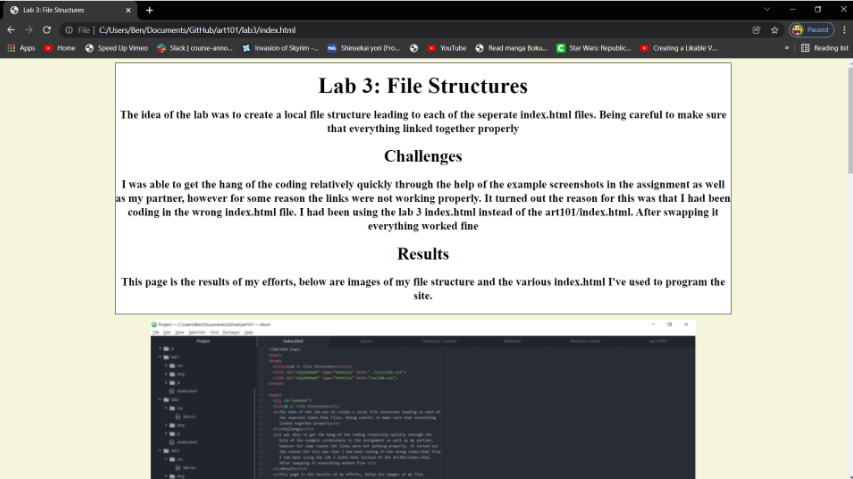

No challenges for this lab.
No problems for this lab.
Here are the results of my efforts.
I went back to some of the earlier labs and tinkered with the css source code so they have a cohesive theme with later labs. Below are some screenshots of the results. You can follow the links on my homepage to see how all of the lab's have a similar theme/style.
